Collection and initial GNN training completed. The new comparison videos below show held-out recurrent GNN predictions alongside MPM reference particles. The earlier scene-preview videos use MPM throughout.
New: sustained pushing and continuous dragging →
New: 5 kg and 10 kg block comparison →
RTX 5080 pilot running GPU invariance and activity-label checks passed. Comparing original GNN, reference-motion selection and a velocity threshold on validation trajectory #8, then training a small selector pilot. No new accuracy result is claimed yet.
Updated 2026-10-18T03:41:27.325152+00:00.
Question: can selecting the particles expected to move prevent artificial sand motion without suppressing real deformation?
| Comparison | How particles are selected | Available during inference? |
|---|---|---|
| Original GNN | Update all particles | Yes |
| Reference-motion selection | Select particles using their upcoming MPM displacement | No — diagnostic using future reference data |
| Velocity threshold | Select particles using their recent predicted velocity history | Yes; tests a simple alternative to learning |
| Learned selection | Predict activity from current particle and rigid-body features | Yes; no future states supplied |
The motion GNN weights remain fixed. For inactive particles, the next position equals the current position and endpoint velocity is set to zero. Active particles receive the original GNN update. The first experiment retains the complete particle graph and its neighborhood context: this is an accuracy comparison, not a measured computational speedup.
The selector is a small per-particle classifier using three particle velocity states, current rigid-surface geometry and motion, local particle density information, and neighboring particle speeds. Training labels use maximum reference displacement over the next 0.1 seconds. Classification thresholds are chosen using validation trajectories; test trajectories are excluded from training and threshold calibration.
The reference paper also reports unwanted motion of stationary particles and uses a predicted active region to reduce it. This experiment tests the same freezing principle with a particle classifier, rather than reproducing its heightmap-based region network.
Conclusion: The current GNN is not yet a reliable replacement for MPM. Completing a rollout without numerical failure does not imply accurate sand motion. The frozen-particle comparison below tests whether predicted deformation improves on leaving the settled sand stationary.
Training completed 10,000 optimizer updates on four NVIDIA L40 GPUs. Validation selected the checkpoint at update 7,500. Test episodes were excluded from training and checkpoint selection. Episode 2 was inspected during development and is also excluded from these results.
| Measurement | Result |
|---|---|
| Held-out one-step transitions, from distinct episodes | 114 |
| One-step particle position RMSE, 20 ms | 0.1120 mm; constant-velocity baseline 0.1992 mm |
| One-step position RMSE for particles near the box | 0.2241 mm; constant-velocity baseline 0.2307 mm |
| Complete five-second recurrent rollouts | 12 / 12 |
| Rollouts with lower final error than stationary sand | 0 / 12 complete rollouts |
| Median final particle position RMSE | GNN 7.06 cm; frozen-particle baseline 1.65 cm |
The one-step test starts each prediction from recorded MPM particle states. The recurrent test starts once from recorded states, then feeds predicted particle states back into the GNN for 250 steps. Both tests receive the current recorded box pose and velocity. No future box state or future particle state enters the model.
Scope: the GNN advances the particles without MPM. The box follows its recorded trajectory in these comparisons. The new model has not yet been coupled to the analytical force estimator, so these videos do not demonstrate independent box motion or interactive dragging.
| Test trajectory ID | Eager GPU / wall | Compiled GPU / wall |
|---|---|---|
| 288 | 37.51 / 37.53 ms | 17.41 / 17.44 ms |
| 352 | 37.47 / 37.50 ms | 17.16 / 17.18 ms |
| 800 | 37.53 / 37.55 ms | 17.26 / 17.28 ms |
Median of timed particle steps after three warm-up steps, measured in separate runs on the same local GPU. Includes neighborhoods, geometry, network and particle-state updates. Excludes rendering, recording, rigid-body dynamics and force estimation. Compilation affects the Torch network; full-solver CUDA graph capture is not enabled. Measurements.
A reference-stationary particle stays within 1 mm of its settled position throughout the evaluated interval. The last column counts those same particles whose GNN displacement exceeds 1 cm at any time.
| Test trajectory ID | Reference-stationary particles | Of those, GNN moves more than 1 cm |
|---|---|---|
| 288 | 5,742 | 5,741 |
| 352 | 5,175 | 5,174 |
| 800 | 6,502 | 6,500 |
Observed failure: in the undisturbed episode, 6,500 of 6,502 reference-stationary particles move more than 1 cm in the GNN rollout. The model fails to preserve the settled sand state even without a commanded box perturbation. These episodes use the same material, geometry and resolution distribution as training; they are held-out seeds, not a larger testbed.
What remains unresolved: this experiment does not isolate the contributions of one-step training, model architecture or missing material state. It does not establish that more trajectories alone will fix the failure. The next controlled comparison should measure whether recurrent training and explicit equilibrium or ground-contact constraints reduce validation-rollout drift.
Left: MPM reference sand. Right: recurrent GNN sand. Both show the same recorded box motion. Evaluated duration 5.00 s; final GNN particle position RMSE 7.10 cm; frozen-particle baseline 1.25 cm.
Left: MPM reference sand. Right: recurrent GNN sand. Both show the same recorded box motion. Evaluated duration 5.00 s; final GNN particle position RMSE 7.89 cm; frozen-particle baseline 4.83 cm.
Left: MPM reference sand. Right: recurrent GNN sand. Both show the same recorded box motion. Evaluated duration 5.00 s; final GNN particle position RMSE 6.88 cm; frozen-particle baseline 0.59 cm.
The selected checkpoint is stored on this computer at particle_nerd_plan/results/particle_gnn_full_training/model/best.pt. Model weights are not published on this website.
The default launch below displays recurrent GNN particles with the held-out continuous-drag box recording. Add --reference to show the corresponding MPM recording, or --headless to check execution without a viewer. Torch compilation occurs on the first model call.
cd /home/jkamohara/isaac/particle_nerd
bash experiments/particle_gnn/play_trained.shComplete held-out metrics · Code and instructions
Model inputs are current particle positions, three particle velocity states, current box pose and velocity, rigid-surface geometry, material parameters, particle mass and radius, and the time step. Materials and particle spacing are fixed in this dataset. Warp handles GPU neighborhoods, geometry and state updates; Torch evaluates the GNN.
Updated 2026-10-17T09:54:16.836106+00:00. Results below distinguish completed checks from planned work.
| Stage | Status | Evidence / next action |
|---|---|---|
| Cloud runtime | Passed on NVIDIA L40 | The cloud runtime check completed with 16,384 particles and the approved 0.04 m grid. Box settlement occurred at 1.34 s. |
| Collection | COMPLETED and audited | All 1,000 unique episodes are uploaded: 776 training, 109 validation and 115 test. Every episode has 251 post-settlement frames. Stored HDF5 size: 125.28 GB; no rejected seeds. |
| Training | COMPLETED: particle-gnn-train-1 | 10,000 updates on four NVIDIA L40 GPUs; optimization took 653.5 seconds. Validation selected update 7,500. The selected checkpoint has been downloaded and verified locally. |
| Inference | Implemented and evaluated; accuracy insufficient | All 12 held-out five-second rollouts remain finite but are worse than stationary sand. Median final error is 7.06 cm versus 1.65 cm for the frozen-particle baseline. Local compiled particle steps take about 17.3 ms on RTX 5090; this excludes rigid dynamics and force estimation. |
Dataset target: 1,000 independent episodes: 776 training, 109 validation and 115 test episodes, split by an episode-ID hash. Each episode contains five seconds after settling, sampled at 50 Hz, plus its initial settling interval. Box mass is sampled uniformly from 5–10 kg. Motion mix: 20% undisturbed, 40% sustained pushing, 40% continuous dragging. Force strength, direction, duration, drag path, initial box state and particle jitter vary between episodes.
Fixed conditions: sand material specified below; initial sand volume 1 × 1 × 0.5 m; MPM grid 0.04 m; 16,384 particles; box 0.12 × 0.12 × 0.08 m; rigid ground with no retaining walls. This experiment does not establish generalization across material parameters, particle spacing or object geometry.
GNN: three message-passing layers, 64 latent features, 0.07 m neighbor radius. Inputs are current particle positions, three particle velocity states, material parameters, and current box pose/velocity. Ground and box use shared distance, normal, surface-velocity, inverse-mass and friction features; direct body influence is limited by distance. All particles are updated. Separate heads predict next position and endpoint velocity at 50 Hz. No reference stress, deformation state or future box state enters inference.
| Operation | Inputs | Outputs |
|---|---|---|
| 1. Construct particle neighborhoods — Warp | Current particle positions | Directed edges between all pairs within 0.07 m; relative position, distance and velocity |
| 2. Encode particle and rigid geometry — Warp + Torch | Three particle velocity states, material values, current ground/box geometry and box velocity | 64 features per particle and edge; a shared rigid-surface encoder contributes only within the interaction radius |
| 3. Exchange particle messages — Torch | Features at neighboring particles and their connecting edges | Updated particle features after three message-passing layers |
| 4. Predict and advance — Torch + Warp | Updated particle features and current particle state | Next position, endpoint velocity and shifted velocity history for every particle |
position_next = position + 0.02 × (velocity + displacement_rate_correction)velocity_next = velocity + endpoint_velocity_correction
The network predicts both corrections. They are separate because average motion during a 20 ms interval differs from velocity at the interval endpoint. During training, the next MPM state is a target for the loss; it is not a model input. During recurrent inference, predicted particle states become the next inputs.
Material inputs: density, Young’s modulus, Poisson ratio, friction, yield pressure, tensile yield ratio, yield stress, hardening, dilatancy and viscosity. Particle mass, particle radius and time step are also supplied. These material values are fixed in the present dataset, so their presence as inputs does not establish material generalization.
Evaluation: compare held-out next-step position and velocity with a constant-velocity baseline; separately measure five-second recurrent particle rollouts. Initial rollout tests replay reference box motion to isolate particle prediction. They do not establish closed-loop force-estimation or box-motion accuracy. Inference uses Warp for GPU geometry/neighborhood/state updates and Torch for the network. CUDA graph capture is not enabled in this new implementation yet.
Episode 2 was inspected during implementation checks and is excluded from final accuracy reporting, leaving 114 eligible test episodes. Training-setting comparisons use validation episodes.
Collection workflow · Collection GPU metrics · Collection task dashboard · Completed four-GPU execution check · Training GPU metrics · Training task dashboard · Training workflow
All 32 OSMO collection workers completed. An independent metadata audit found exactly one accepted record for each episode ID 0–999 and verified every seed, mass, motion type and train/validation/test assignment against the campaign specification. No simulation seed required a retry.
| Measured quantity | Result |
|---|---|
| Episode split | 776 training, 109 validation, 115 test; test episode 2 is excluded from final accuracy reporting because it was inspected during development |
| Post-settlement records | 251 states per episode at 50 Hz; 250,000 transitions over 1,000 five-second interactions |
| Records including initial settling | 318,296 particle states, with 16,384 positions and velocities per state |
| Stored HDF5 bytes | 125.28 GB (116.68 GiB), excluding small metadata and logs |
| Observed box mass range | 5.003–9.996 kg |
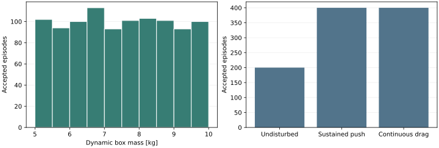
Force-recording limitation: 44 episodes have a translational box-force residual above 0.01 N when only sand feedback, applied disturbances and gravity are included. Direct rigid-ground contact is not recorded as a separate force. Episode 456 was inspected: its largest residual coincides with the box contacting rigid ground outside the sand pile. These records remain valid particle-motion targets; the residual must not be interpreted as sand force.
Complete audit and metadata fingerprint. The dataset remains in the authorized OSMO storage; this page publishes measurements and selected visualizations.
This is a two-training-episode pilot, not the 1,000-episode experiment. Three runs use identical seeds, 2,000 optimizer updates and the same separate validation episode. Each checkpoint is selected by the same validation metric. The five-second evaluation uses predicted particle states and recorded box motion.
| Velocity noise [m/s] | One-step particle RMSE | One-step RMSE near box | Five-second particle RMSE |
|---|---|---|---|
| 0.005 | 0.0320 mm | 0.0485 mm | 40.51 cm |
| 0.0005 | 0.0067 mm | 0.0183 mm | 7.19 cm |
| 0 | 0.0070 mm | 0.0186 mm | 8.41 cm |
Conclusion: 0.0005 m/s performs better than 0.005 m/s in this pilot and is selected for the first full-data run. The pilot remains inadequate: constant velocity gives a one-step RMSE of 0.0063 mm, and keeping settled particles stationary gives a five-second RMSE of 0.80 cm. Lower one-step error does not by itself establish stable particle dynamics. The full-data experiment must be evaluated separately.
Errors compare corresponding particle positions against MPM. The validation box undergoes sustained pushing. These results do not establish material or scene generalization. Exact pilot measurements
Same pilot checkpoint and validation episode; 16,384 particles on one RTX 5090. Each run contains 250 particle steps. Medians exclude the first three steps, including initial compilation. No other experiment used the local GPU during these two timed runs.
| Network execution | GPU time per particle step | Wall time per particle step |
|---|---|---|
| Uncompiled Torch | 36.83 ms | 36.85 ms |
| Compiled Torch | 16.13 ms | 16.15 ms |
The particle step includes Warp neighborhood construction, geometry features, GNN evaluation and particle state updates. It excludes rigid-body dynamics, analytical contact-force estimation, rendering and recording. First-step particle positions differ by at most 0.83 micrometers between the two implementations.
Conclusion: optional network compilation reduces particle-step time by 2.28× in this workload. It does not fix the pilot's prediction error. This is not a comparison against MPM, and full-solver CUDA graph capture is not enabled. Use play.py --compile to enable this path. Measurements
Latest measured optimizer step: 10,000. Validation episodes are separate from training episodes. The plotted position error is a one-step error over 20 ms; it does not establish long-rollout stability.
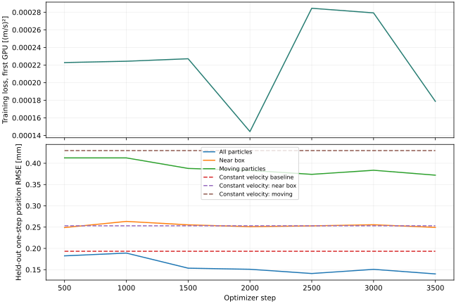
The GNN starts from reference particle state and then uses its own predicted states for 250 steps (5 s), unless diagnostics stop the rollout. Box motion is replayed from the held-out MPM trajectory. MPM does not advance the predicted particles. This test isolates particle prediction; it is not a closed-loop body-force test.
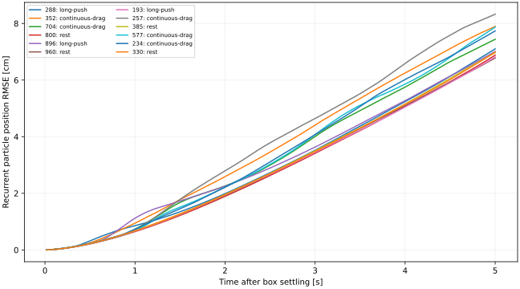
| Test trajectory ID | Motion | Evaluated duration | Final GNN error | Frozen-particle baseline | Largest fraction below ground by > 0.04 m | State check |
|---|---|---|---|---|---|---|
| 288 | long-push | 5.00 s | 7.10 cm | 1.25 cm | 0.696% | Finite |
| 352 | continuous-drag | 5.00 s | 7.89 cm | 4.83 cm | 0.586% | Finite |
| 704 | continuous-drag | 5.00 s | 7.44 cm | 2.95 cm | 0.684% | Finite |
| 800 | rest | 5.00 s | 6.88 cm | 0.59 cm | 0.671% | Finite |
| 896 | long-push | 5.00 s | 7.01 cm | 2.06 cm | 0.641% | Finite |
| 960 | rest | 5.00 s | 6.78 cm | 0.56 cm | 0.610% | Finite |
| 193 | long-push | 5.00 s | 6.82 cm | 0.76 cm | 0.647% | Finite |
| 257 | continuous-drag | 5.00 s | 8.33 cm | 6.26 cm | 0.677% | Finite |
| 385 | rest | 5.00 s | 6.98 cm | 0.56 cm | 0.653% | Finite |
| 577 | continuous-drag | 5.00 s | 7.87 cm | 4.00 cm | 0.671% | Finite |
| 234 | continuous-drag | 5.00 s | 7.74 cm | 3.54 cm | 0.665% | Finite |
| 330 | rest | 5.00 s | 6.98 cm | 0.51 cm | 0.708% | Finite |
A finite rollout can still be inaccurate. The frozen baseline holds particles at their settled positions. Ground violation counts particle centers more than 0.04 m below the rigid ground. All RMSE values compare corresponding particle IDs, not rendered appearance.
This subset is selected from reference displacement relative to the settled particle positions, at the final evaluated time. It focuses on material deformation rather than stationary particles.
| Test trajectory ID | Displaced particles | GNN RMSE | Frozen-particle baseline |
|---|---|---|---|
| 288 | 2,369 | 6.84 cm | 3.18 cm |
| 352 | 3,985 | 10.09 cm | 9.77 cm |
| 704 | 3,352 | 8.89 cm | 6.48 cm |
| 800 | 1,635 | 6.00 cm | 1.60 cm |
| 896 | 2,678 | 6.66 cm | 5.03 cm |
| 960 | 1,521 | 6.73 cm | 1.52 cm |
| 193 | 1,727 | 6.03 cm | 2.14 cm |
| 257 | 3,786 | 11.68 cm | 13.02 cm |
| 385 | 1,459 | 6.25 cm | 1.55 cm |
| 577 | 4,012 | 9.49 cm | 8.05 cm |
| 234 | 3,049 | 9.89 cm | 8.17 cm |
| 330 | 1,249 | 6.36 cm | 1.50 cm |
| Setting | Value |
|---|---|
| Scene | Rigid ground, sand particles, and one dynamic box. No retaining walls or tray. |
| Initial sand volume | 1.0 × 1.0 × 0.5 m. Ground z = 0; initial sand surface z = 0.5 m. The unsupported pile can spread. |
| MPM grid / particle sampling | 0.04 m grid; 32 × 32 × 16 = 16,384 particles; 0.03125 m initial spacing; independent jitter up to 20% of spacing. |
| Integration / solver | 200 Hz coupled physics; APIC transfer; sparse MPM grid; maximum 25 solver iterations, tolerance 10⁻⁴. Standard Newton convergence loop; this is not a claim of converged ground truth. |
| Particle recording | 50 Hz. Five seconds after the box settles, giving 251 states. These previews also retain the preceding settling interval. |
| Box | 0.12 × 0.12 × 0.08 m; original previews 1.5 kg, new mass comparison 5 and 10 kg; rigid-surface friction 0.6. Random initial position, orientation, linear velocity and angular velocity. |
| Sand material | Density 1,600 kg/m³; Young’s modulus 10¹⁵ Pa; Poisson ratio 0.3; friction 0.48; yield pressure 10¹⁵ Pa. Tensile yield ratio, yield stress, hardening, dilatancy and viscosity are zero. |
| Settling criterion | Box speed < 0.02 m/s and angular speed < 0.2 rad/s for 0.3 s, with sand support force above 10% of box weight (1.5 N in the original 1.5 kg previews), after at least 0.5 s. This tests the box, not equilibrium of every sand particle. Failure to settle within 5 s stops the sample. |
Initial box-center x/y offsets are within ±0.08 m; center height is 0.60–0.66 m above ground. Roll and pitch are within ±0.25 rad; yaw within ±3.14 rad. Initial horizontal velocity is within ±0.25 m/s, vertical velocity −0.15–0 m/s, roll/pitch angular velocity ±1 rad/s, and yaw angular velocity ±2 rad/s. The original three motion previews use different seeds. The heavier-block and sustained-motion examples share seed 41001 and identical initial states; their mass and applied disturbances are specified below.
Each disturbance lasts 4.65 seconds, from 0.25 to 4.90 s after settling, with 0.20 s ramps. All four examples use the same initial particles and box pose/velocity (seed 41001), the 1 × 1 × 0.5 m initial sand volume, and a 0.04 m MPM grid. The rigid ground has no retaining walls.
The videos include initial settling followed by the full five-second interaction window. These are MPM reference simulations. Every recorded state was checked for finite values, every applied disturbance was independently reconstructed, and translational box force balance was checked using applied sand feedback, external force and gravity. No particle center moved more than one grid spacing below the rigid ground.
During the five seconds after settling, the box center travels 0.16 m horizontally along its path; its maximum horizontal distance from its settled position is 0.10 m. Peak box speed: 0.13 m/s; peak angular speed: 0.95 rad/s.
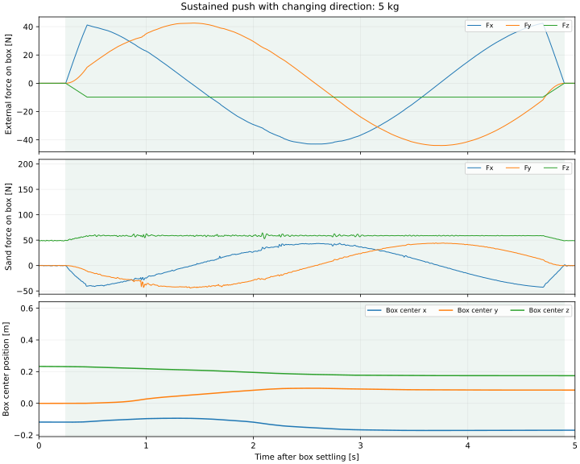
Shaded interval: commanded interaction. Force components use world axes; box-center z is measured above rigid ground. Force-balance residual is at most 5.8e-05 N. Settings and validation · 200 Hz force records
During the five seconds after settling, the box center travels 0.12 m horizontally along its path; its maximum horizontal distance from its settled position is 0.06 m. Peak box speed: 0.12 m/s; peak angular speed: 0.74 rad/s.
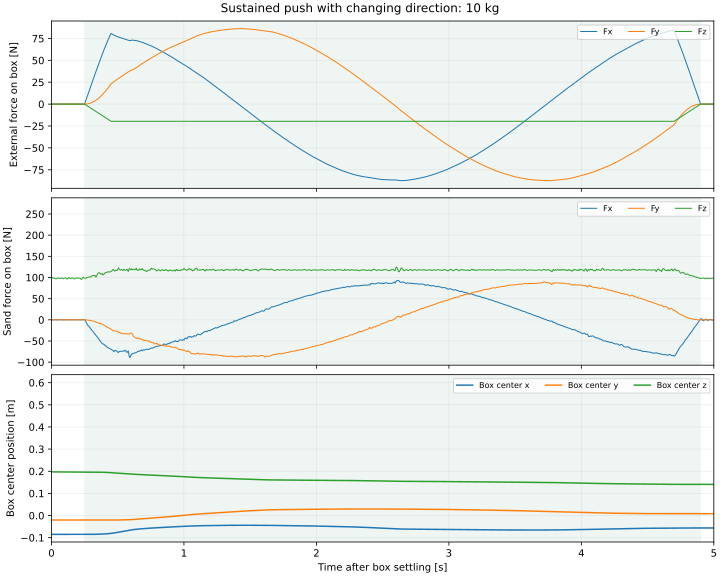
Shaded interval: commanded interaction. Force components use world axes; box-center z is measured above rigid ground. Force-balance residual is at most 0.00012 N. Settings and validation · 200 Hz force records
During the five seconds after settling, the box center travels 2.56 m horizontally along its path; its maximum horizontal distance from its settled position is 0.55 m. Peak box speed: 0.96 m/s; peak angular speed: 7.46 rad/s.
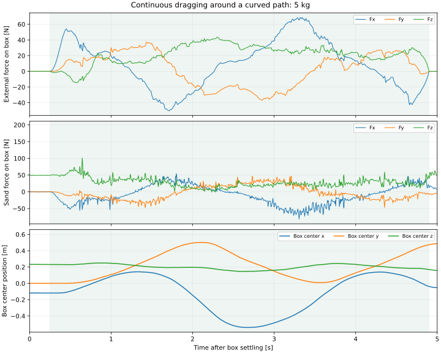
Shaded interval: commanded interaction. Force components use world axes; box-center z is measured above rigid ground. Force-balance residual is at most 9.4e-05 N. Settings and validation · 200 Hz force records
During the five seconds after settling, the box center travels 2.39 m horizontally along its path; its maximum horizontal distance from its settled position is 0.52 m. Peak box speed: 0.89 m/s; peak angular speed: 6.58 rad/s.
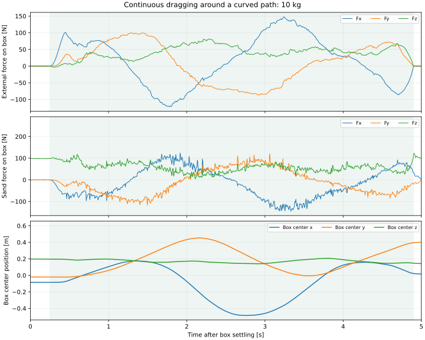
Shaded interval: commanded interaction. Force components use world axes; box-center z is measured above rigid ground. Force-balance residual is at most 0.00019 N. Settings and validation · 200 Hz force records
Only block mass changes. Box dimensions remain 0.12 × 0.12 × 0.08 m. Sand, grid spacing, random seed, initial particles, box pose and velocity are identical; exact initial-state equality was checked. These passive drop-and-settle cases isolate mass: no external push or drag is applied.
Left to right: 1.5 kg, 5 kg, 10 kg. Synchronized by time since release; playback ends at the shortest recording. Individual heavier-block videos below include the complete five-second interval after each box meets the settling criterion.
Measured effect: at 5 s, the 5 kg box center is 0.5 cm lower than the 1.5 kg box center; the 10 kg box center is 3.7 cm lower. The 10 kg case produces the larger nearby particle displacement difference. Approximate embedment is not monotonic between 1.5 and 5 kg because box tilt and the local surface estimate also change; do not interpret this single geometric number as a general mass–penetration law.
| Block mass | Center height | Lowest corner height | Approximate embedment | Nearby particle RMS difference vs 1.5 kg |
|---|---|---|---|---|
| 1.5 kg | 22.7 cm | 15.8 cm | 5.3 cm | 0.0 mm |
| 5 kg | 22.2 cm | 17.5 cm | 3.8 cm | 14.2 mm |
| 10 kg | 19.0 cm | 12.3 cm | 9.1 cm | 26.3 mm |
All measurements are at t = 5 s after release. Heights are above the rigid ground at z = 0. Approximate embedment is the nearby particle-surface estimate minus the lowest box-corner height, clipped at zero. The surface estimate is the 95th percentile of particle-center heights in a 0.12–0.20 m horizontal annulus around the current box center. This is a coarse geometric indicator, not an exact contact-surface measurement. Particle RMS uses the same particle IDs initially within 0.25 m horizontally of the initial box center; it measures displacement differences caused by changing mass, not prediction error.
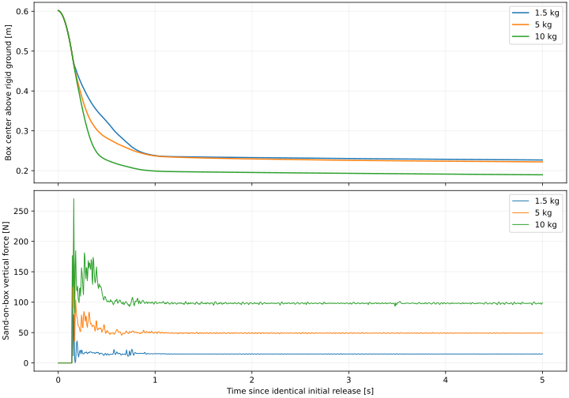
All runs remained finite. Maximum body force-balance residual across the three runs: 0.00012 N. Maximum fraction of particle centers more than one 0.04 m grid cell below ground: 0.000%.
Undisturbed settling · Pushes and rotation · Dragging and lift
No external forces after release. This control records spontaneous spreading and residual motion after the box settles.
Box settling criterion reached at 1.38 s; then five seconds recorded. All particle and box states remained finite. Maximum fraction of particle centers more than 0.04 m below the rigid ground: 0.000%.
Maximum box-center displacement after settlement: 1.1 cm. Maximum translational force-balance residual: 1.9e-05 N, using the recorded applied sand force, gravity, and external force.
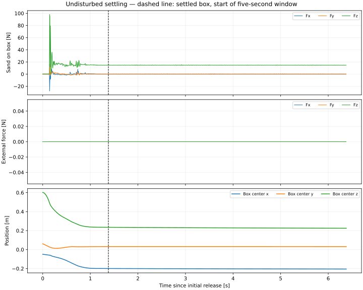
Forces are world-axis components. Sand-on-box force excludes gravity and external disturbances. The coupled rigid solver applies the previous step’s sand force. Position z is measured above the rigid ground at z = 0; the initial sand surface is z = 0.5 m. Video is real time at 25 fps, selecting every second 50 Hz particle frame. Particle display radius is 0.012 m; this does not change simulation sampling.
Three smooth force and torque pulses, with seed-randomized times and directions. The box remains freely dynamic.
Box settling criterion reached at 1.42 s; then five seconds recorded. All particle and box states remained finite. Maximum fraction of particle centers more than 0.04 m below the rigid ground: 0.000%.
Maximum box-center displacement after settlement: 10.6 cm. Maximum translational force-balance residual: 1.6e-05 N, using the recorded applied sand force, gravity, and external force.
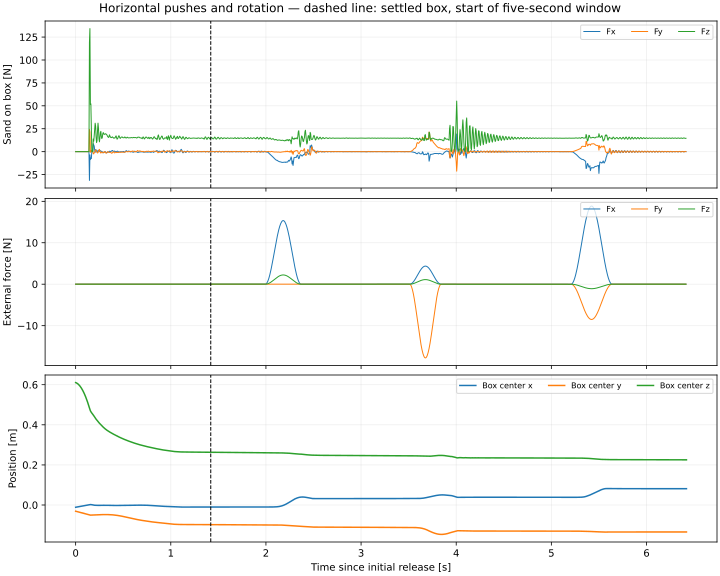
Forces are world-axis components. Sand-on-box force excludes gravity and external disturbances. The coupled rigid solver applies the previous step’s sand force. Position z is measured above the rigid ground at z = 0; the initial sand surface is z = 0.5 m. Video is real time at 25 fps, selecting every second 50 Hz particle frame. Particle display radius is 0.012 m; this does not change simulation sampling.
A moving spring target pulls an off-center point on the box. The force is capped at 45 N; its torque is computed about the box center. Box motion is not prescribed.
Box settling criterion reached at 1.40 s; then five seconds recorded. All particle and box states remained finite. Maximum fraction of particle centers more than 0.04 m below the rigid ground: 0.000%.
Maximum box-center displacement after settlement: 31.0 cm. Maximum translational force-balance residual: 1.5e-05 N, using the recorded applied sand force, gravity, and external force.
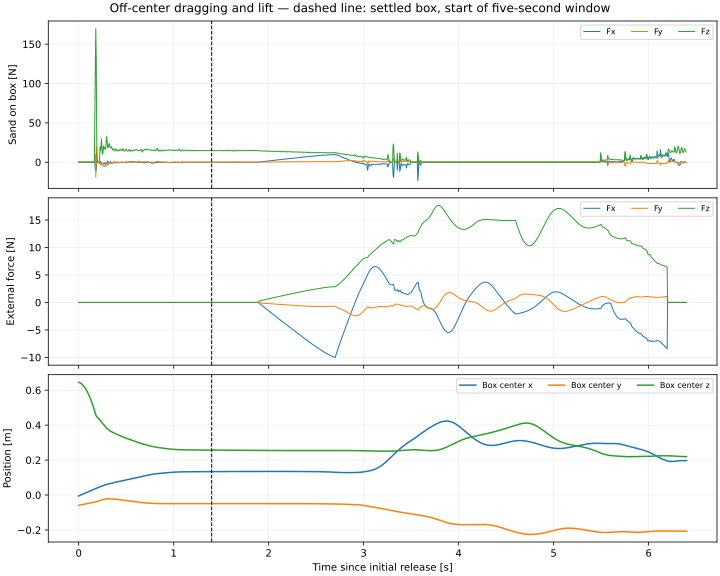
Forces are world-axis components. Sand-on-box force excludes gravity and external disturbances. The coupled rigid solver applies the previous step’s sand force. Position z is measured above the rigid ground at z = 0; the initial sand surface is z = 0.5 m. Video is real time at 25 fps, selecting every second 50 Hz particle frame. Particle display radius is 0.012 m; this does not change simulation sampling.
Independent recording checks verify finite data, 50 Hz particle timestamps, 251 post-settlement states, the settling criterion, one-step force-feedback alignment, translational force balance, and reconstruction of every applied disturbance from its recorded parameters.
Predict particle position and velocity every 20 ms from motion history, neighboring particles, material parameters, rigid geometry and rigid-surface velocity. No reference stress or deformation state is required at inference. Keep grid spacing and particle sampling fixed for this first experiment; approximately 0.07 m is the proposed graph radius at this sampling.
Compare the existing model with a model that limits the intruder’s direct effect to possible contact and propagates disturbance through particle neighbors. Continue to model gravity, settling and relaxation after contact ends. A blanket rule that freezes every particle not touching the box would suppress valid motion. Include undisturbed controls and measure accumulated drift. All particles remain represented; no region selector is required.
Evaluate 50 Hz learned motion both directly and after interpolation to the 200 Hz rigid-body/force-estimation interval. Interpolation cannot recover unresolved impact peaks. Retain a small high-frequency validation subset to quantify lost contact information. No interpolation accuracy has been established yet.
The previous selected GNN used only 48 training episodes of 1.5 s. The later 36-episode diversity pilot did not consistently improve coupled forces and box motion. These new previews are reference-data checks, not evidence of improved learned prediction. The examples were reviewed; collection and training are now authorized. See current status above.
Download preview, rendering and validation scripts. The launcher uses the existing IsaacLab particle-NeRD worktree and local Newton runtime. Run bash experiments/particle_gnn/python.sh experiments/particle_gnn/preview.py --case push-spin --output /tmp/particle-gnn-sample from the particle_nerd directory. Completed outputs are never overwritten.